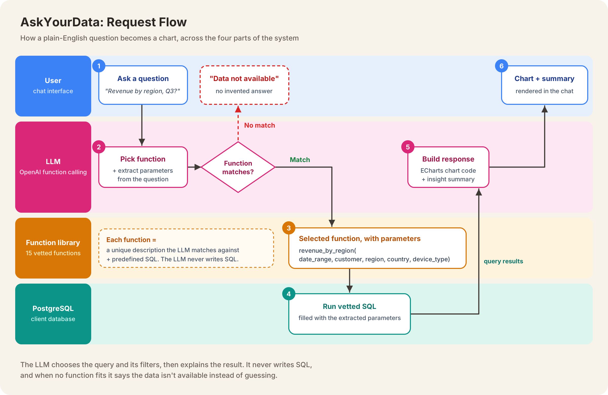

Problem and context
A UK-based telecom management company relied on a data team in Vietnam for its reporting. Because of the time difference, every follow-up question meant waiting for the next working day, and getting even a simple figure could take days of back-and-forth.
The main output was a weekly report shared with every team. It covered information for everyone, so each team had to dig through it for the few numbers that mattered to them.
The client wanted to use generative AI so any team could get its own data directly, without waiting on analysts. We proposed a chatbot: a user asks a question in plain English, and an LLM picks the right predefined database query, runs it, and returns the answer as a chart with a short summary.
Architecture diagram

How it works
- Question. A business user types a question into the chat. The backend passes it to the LLM.
- Function selection. The LLM has a list of 15 functions, each with a description. It compares the question with the descriptions and picks the function that matches.
- Function library. Each function pairs its description with predefined SQL written and checked by the team.
- Query. The selected function’s SQL runs on the client’s PostgreSQL database.
- Response. The results go back to the LLM, which generates Apache ECharts code for a chart and a short summary of what the data shows.
- Render. The chart and summary appear in the chat.
My role
I worked directly with the client to scope the system, and designed how the LLM chose and presented data.
- Started from real usage. I worked with the client to find which queries their teams ran regularly and how important each one was, so the chatbot covered the questions people actually asked.
- The LLM picks queries; it never writes them. All SQL was predefined and checked by the team. The LLM’s job was to choose the right query, which removed the risk of invented or unsafe SQL running against the client’s database.
- Parameters made 15 functions flexible. Each function accepted filters such as date range, customer, region, country and device type, extracted from the user’s question. A handful of functions could answer far more questions than a fixed weekly report, and each team got exactly the slice of data it needed.
- Capped the function list at 15. My research into function calling suggested selection accuracy drops once a model has more than about 15–20 functions to choose from. I narrowed the client’s queries down to the 15 most important and most frequently used categories.
- Wrote descriptions to be clearly distinct. The LLM chooses a function from its description alone, so each description had to be specific and clearly different from the others. I treated this as the most important part of each function, more than the SQL itself.
- “Data not available” over a guess. When no function matched, the chatbot said the data wasn’t available. A wrong number that looks plausible is worse than no answer, especially for business decisions.
- Designed the system prompt. It guided the LLM to choose the right function, extract the parameters, generate the chart code, and write a short summary, so users got the insight directly without having to interpret the chart themselves.
Evaluation against a baseline
I evaluated the system at two levels: the numbers and the narrative.
- The numbers. The LLM turns query results into chart code, so it could alter or drop values along the way. To check this, I parsed the values from the chart’s JSON output and compared them with the raw SQL results. I ran this check on queries for the client’s top 10 customers, which covered their most important and most frequently used data.
- The narrative. Whether a summary matched its chart and wasn’t misleading couldn’t be checked automatically, so a person reviewed each chart and summary together. In some cases, the summary claimed things the chart didn’t show. I fixed this by adding strict rules to the system prompt telling the LLM to base its summary only on the returned data, with no assumptions or outside knowledge.
Business impact
- 40% faster answers. Business teams got answers directly from the chatbot instead of waiting on a data team in another time zone.
- Less dependence on the data team. Teams could pull their own data whenever they needed it, and the analysts spent less time on routine requests.
- More flexible analysis. Instead of one weekly report for everyone, each team could set its own filters (date range, customer, region, country, device type) to compare exactly what mattered to them.
Design trade-offs and lessons learned
- Keeping the insight summary, with a person in the loop. We could have shown charts only and avoided the risk of misleading summaries altogether. We kept them because they helped analysts and business users understand the data faster, and accepted the cost of human review to make sure each summary matched its chart.
- A fixed chart type per function. Each function specified its own chart type, so the LLM always generated the same kind of chart for the same question. This made results consistent and easy to compare over time, at the cost of letting the model choose a chart freely.
- Lesson: test how many functions the model can handle. With too many functions, the LLM started picking the wrong one. Testing to find a number that worked well (15 here) mattered more than covering every possible query.
- Lesson: function descriptions are the core of function calling. Each description has to be different enough from the others to avoid confusion, but still close enough to how users actually phrase their questions to match. Getting that balance right was the most important part of the project.